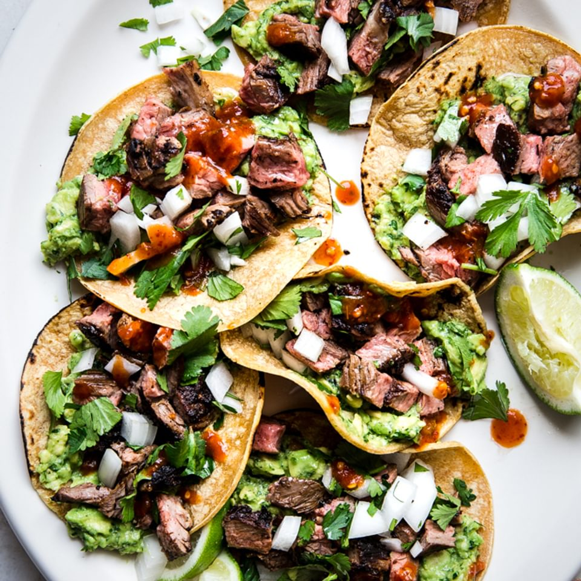

Carne Asada Tacos

Description
Carne asada tacos are one of my favorite kinds of tacos.
In this recipe we will be making them as my family used to.
We used to make this recipe at least once a month growing
up and I continue to make it every so often with my girlfriend.
Let's get into it!
Ingredients
- Flank Steak
- Avocado
- Onion
- Lime
- Cilantro
- Cheese
- Tortillas
- Salsa
Steps
- Grill the carne asada until it’s cooked to your preference.
Slice it against the grain, then chop it into small pieces.
- Use a spoon to mash the avocado and spread a large spoonful or
two onto each tortilla. Then, top the avocado with chopped carne
asada, a sprinkle of cotija cheese, some diced onion, salsa and
fresh cilantro. Squeeze fresh lime juice on top.